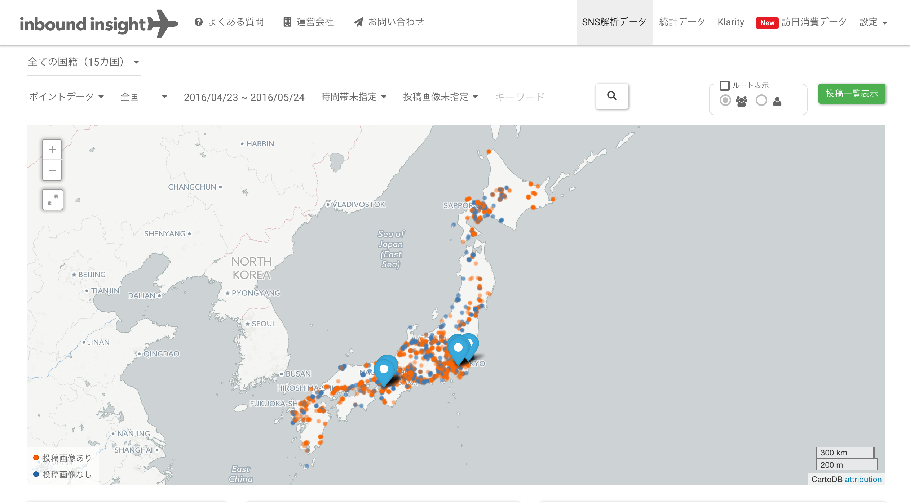
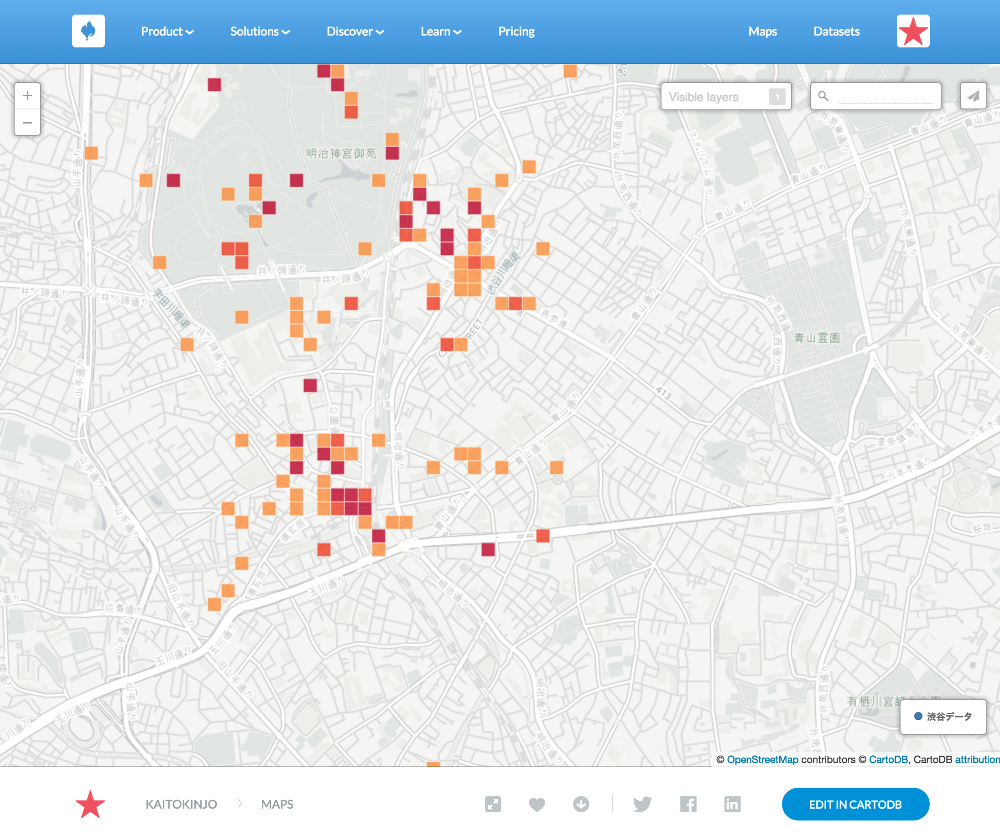
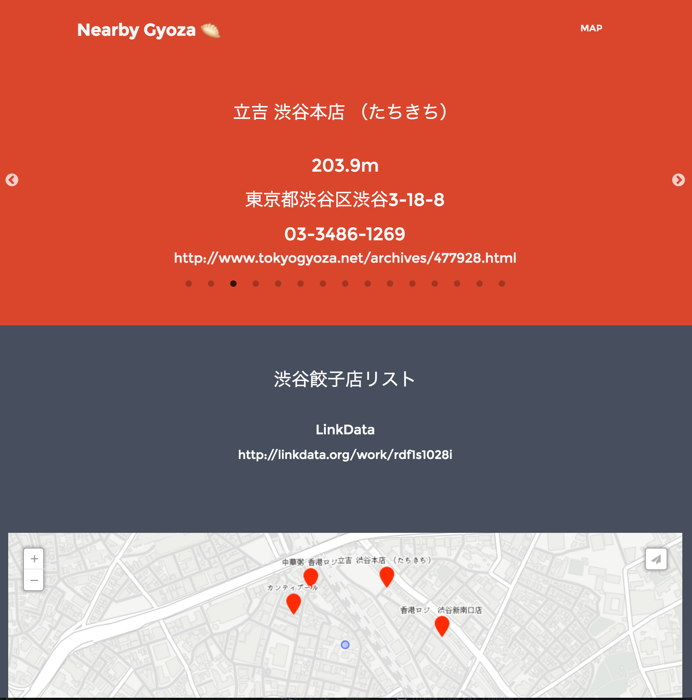

class: center, middle,inverse ### CartoDBを利用したWebアプリケーション開発 ### Kaito Kinjo --- ### 自己紹介 ### Kaito kinjo - <img src="http://nightley.jp/wp/wp-content/uploads/2015/03/newlogo.svg" alt="Nightley Inc." width="130"> - Webアプリケーションエンジニア - 訪日外国人行動分析サービス <img src="http://inbound.nightley.jp/img/logo@2x.png" alt="inbound insight" width="200"> --- class: center, middle,inverse ### CartoDBの活用事例 --- ### CartoDBの活用事例 - データビジュアライゼーション - <a href="https://briankilmartin.cartodb.com/viz/54ddb5c0-f80e-11e5-9a9c-0e5db1731f59/embed_map" target="_brank">Panama Papers</a> - <a href="http://graphics.latimes.com/kobe-every-shot-ever/" target="_brank">Every shot Kobe Bryant</a> - Webアプリケーション - inbound insight - Data USA <a href="http://datausa.io/" target="_brank"></a> <a href="http://datausa.io/" target="_brank"><img src='http://media2.govtech.com/images/dataUSA.jpg' height="180" /></a> --- class: center, middle,inverse ### Webアプリケーションを作成する上での問題点 --- ### Webアプリケーションを作成する上での問題点 .center[ 位置情報データを可視化したい ↓ でも、DB立てるの面倒... ↓ CartoDBで可視化しよう ] --- ### Webアプリケーションを作成する上での問題点 .center[ 位置情報データを可視化したい ↓ でも、DB立てるの面倒... ↓ CartoDBで可視化しよう ↓ CartoDB Editorで編集 ↓ 共有 ] --- ### Map共有  --- class: center, middle,inverse ### ちょっと物足りない... --- class: ### Webアプリケーションを作成する上での問題点 .center[ 位置情報データを可視化したい ↓ でも、DB立てるのめんどくさい... ↓ CartoDBで可視化しよう ] --- class: ### Webアプリケーションを作成する上での問題点 .center[ 位置情報データを可視化したい ↓ でも、DB立てるのめんどくさい... ↓ CartoDBで可視化しよう ↓ <Font color="red">DBとして活用できるのでは？</Font> ] --- class: center, middle,inverse ### よくあるWebアプリケーションの構成 --- ### よくあるWebアプリケーションの構成 - PostGIS , MySQL - PHP , Ruby , Python - Javascript(Google Maps API , Leaflet.js) - HTML&CSS --- class: center, middle,inverse ### 今回のWebアプリケーションの構成 --- ### 今回のWebアプリケーションの構成 - CartoDB - Javascript(Cartodb.js) - HTML&CSS --- class: center, middle,inverse ### とりあえずDemo --- ### Demo - Nearby Gyoza - 現在地から最も近い餃子店を紹介  --- class: ### 利用したデータ - 渋谷餃子店リスト - CityDataからデータを拝借 - <a href="http://linkdata.org/work/rdf1s1028i" target="_brank">http://linkdata.org/work/rdf1s1028i</a> --- ### 今回のDemoで利用した技術 - Cartodb.js SQL API - PostGIS各種関数 - ST_MakePoint - ST_distance - ~~isoline~~ - 有料のため断念... - https://cartodb.com/location-data-services/isolines/ --- ### SQL - Cartodb.js SQL API - https://docs.cartodb.com/cartodb-platform/cartodb-js/sql/ - 指定した緯度経度と餃子店の距離を取得 ``` sql SELECT ST_Distance( the_geom ,ST_SetSRID(ST_MakePoint({{lon}},{{lat}}),4326) ,false ) distance FROM shibuya_gyoza ORDER BY distance ``` --- ### JavaScript - 指定した緯度経度と餃子店の距離を取得 ``` javascript var cartodb_sql = new cartodb.SQL({ user: 'user_name' }); var sql = 'SELECT ' + ' ST_Distance( ' + ' the_geom ' + ' ,ST_SetSRID(ST_MakePoint({{lon}},{{lat}}),4326) ' + ' ,false ' + ' ) distance ' + 'FROM shibuya_gyoza ' + 'ORDER BY distance '; cartodb_sql.execute(sql,{lat:lat,lon:lon}) .done(function(data) { console.log(data.rows); }); ``` --- ### 今回のWebアプリケーションの利用シーン - オープンデータなどを利用したアプリケーション - CartoDBのFreeプランだと、データがPublicに... - 地理空間情報を利用するアプリケーション - すぐに使えるDBが手元に無いかつ、時間が無い場合など --- class: center, middle,inverse ### ご清聴ありがとうございました。